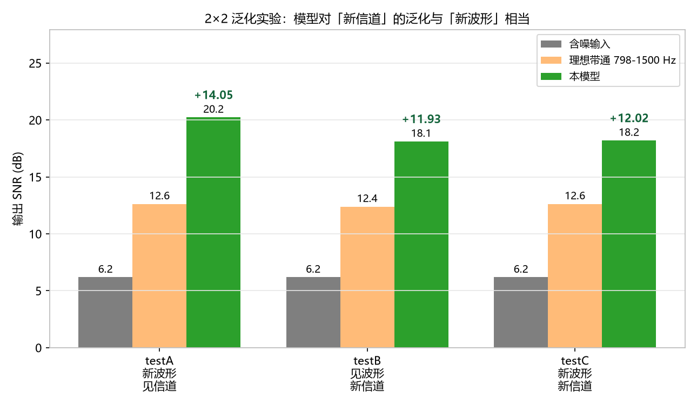
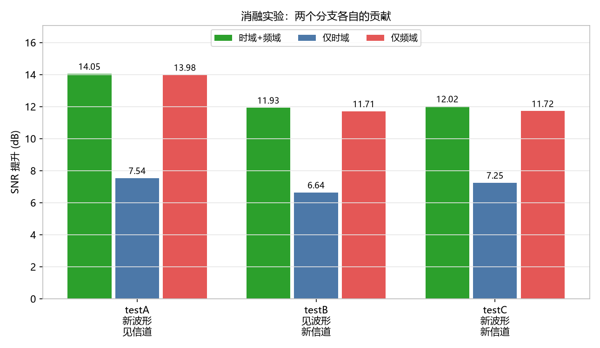
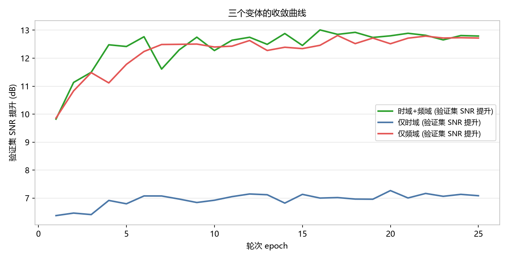

D:/project/dataset_v3
（10,600 样本，5.25 GB）· 2026-10-13把 25 个信道和 20 组 chirp 波形同时分组，构造四个格子：
| split | chirp | 信道 | 样本数 | 用途 |
|---|---|---|---|---|
| train | 1–14 | 1–18 | 7,560 | 训练 |
| val | 15–17 | 19–21 | 360 | 选模型（波形与信道都是新的） |
| testA | 18–20 | 1–18 | 1,080 | 只换波形 |
| testB | 1–14 | 22–25 | 1,120 | 只换信道 |
| testC | 18–20 | 22–25 | 480 | 两者都换 |
三个测试集都覆盖 5 档 SNR（−10/−5/0/+5/+10 dB）各 4–8 次噪声实现， 输入 SNR 均为 6.19 dB，可直接横向比较。
clean_signal：
相关系数 = 1.0000000000，最大绝对差 = 0（完全相同的数组）。
所以 testA 的结果可以直接和 v2 报告的 +13.66 dB 对照。
| 测试集 | 样本 | 输入 SNR | 输出 SNR | SNR 提升 | SI-SDR 提升 |
|---|---|---|---|---|---|
| testA 新波形 + 见过的信道 | 1080 | 6.19 | 20.24 | +14.05 | +14.02 |
| testB 见过的波形 + 新信道 | 1120 | 6.19 | 18.12 | +11.93 | +11.89 |
| testC 新波形 + 新信道 | 480 | 6.19 | 18.21 | +12.02 | +11.98 |
看主效应（都控制在"新波形"这一行/列上）：

testA 与 testB 之间差 2.1 dB。如果直接下结论说"信道泛化有 2 dB 代价"，那是错的 —— 因为被抽作测试的 4 个信道（22–25）不是随机抽的，它们的时延扩展全部落在分布的高端：
| 分组 | 时延扩展 范围 | 中位 |
|---|---|---|
| 训练信道 1–18 | 5.8 ~ 102.8 ms | 70.1 ms |
| 验证信道 19–21 | 9.0 ~ 87.7 ms | 74.1 ms |
| 测试信道 22–25 | 97.0 ~ 108.9 ms | 102.0 ms |
也就是说，测试信道全都是"最难"的那一类。而上一轮已经查明：时延扩展越大，降噪增益越低 （在 v2 的 25 个信道上，r = −0.862）。
做法：用 v2 的数据（25 个信道全部见过）拟合"增益 ~ 时延扩展"，
得到 增益 = 16.21 − 0.0378 × 时延(ms)，r = −0.862。再外推到测试信道的时延：
| 测试信道时延 (ms) | 97.0 | 100.0 | 108.9 | 104.0 | 平均 |
|---|---|---|---|---|---|
| 用「见过的信道」拟合出的期望增益 (dB) | 12.54 | 12.43 | 12.09 | 12.28 | 12.34 |
严格来说，测试信道的时延（97–108.9 ms）略微超出训练信道范围（5.8–102.8 ms）， 属于轻度外推。这也说明模型在训练分布边缘仍然稳定。 另外注意理想带通在 testB 上也从 12.63 降到 12.40 dB，独立印证了新信道本身更难。
完整模型把两个分支的残差用可学习的 softmax 权重融合。训练过程中权重一路演化：
| 轮次 | 1 | 2 | 3 | 5 | 10 | 15 | 25 |
|---|---|---|---|---|---|---|---|
| w_time（时域分支） | 0.297 | 0.154 | 0.083 | 0.041 | 0.015 | 0.008 | 0.006 |
| w_freq（频域分支） | 0.703 | 0.846 | 0.917 | 0.959 | 0.985 | 0.992 | 0.994 |
时域分支的权重被训练到 0.006 —— 模型基本弃用了它。这是一个需要如实报告的发现。
| 变体 | 参数量 | testA | testB | testC | 三者均值 |
|---|---|---|---|---|---|
| 时域 + 频域（完整模型） | 57,657 | 14.05 | 11.93 | 12.02 | 12.67 |
| 仅频域分支 | 1,910 | 13.98 | 11.71 | 11.72 | 12.47 |
| 仅时域分支 | 55,745 | 7.54 | 6.64 | 7.25 | 7.14 |
读法：仅频域分支的参数量只有 1,910 —— 是完整模型 57,657 的 1/30 —— 却已经追到只差 0.20 dB；而仅时域分支（55,745 参数）差了 5.5 dB。 也就是说，这个模型本质上是一个频域掩码降噪器，时域分支几乎没起作用。


| v2 | v3 (testA) | |
|---|---|---|
| 训练信道数 | 25（全部） | 18 |
| 训练样本 | 7,000 | 7,560 |
| 测试波形 | chirp 18–20（新） | chirp 18–20（新，逐点相同） |
| 输出 SNR | 19.85 dB | 20.24 dB |
| SNR 提升 | +13.66 dB | +14.05 dB |
在完全相同的干净信号上，v3 反而高 0.39 dB。这说明把训练信道从 25 个减到 18 个没有造成损失， v3 的 2×2 结论可以和 v2 的结论并列引用。
hidden 是没用的（它已经被弃用）。生成数据：make_dataset_v3.m → D:/project/dataset_v3/（10,600 样本，3 分 49 秒）
训练与评测：C:\Users\32213\PycharmProjects\project1\大创_v3.py
python 大创_v3.py --tag full — 完整模型（25 轮，49.6 分钟）python 大创_v3.py --tag freqonly --time 0 — 仅频域分支python 大创_v3.py --tag timeonly --freq 0 — 仅时域分支分析脚本：analyze_v3.py、make_figs_v3.py、fix_chan_map.py
运行环境：D:/python/python-3.11.4-embed-amd64/project1/Scripts/python.exe（torch 2.8.0+cu128，RTX 4050）
报告生成时间 2026-10-13 · 所有数字均在真实项目数据上实测，可复现